Xuejiao Zhao
Wallenberg-NTU Presidential Postdoctoral Fellow
LILY Research Centre, Nanyang Technological University
![Email icon]()
![Google Scholar icon]()
![Github icon]()
About me
Hi there, I am Xuejiao Zhao (赵雪娇). Currently, I am a Wallenberg-NTU Presidential Postdoctoral Fellow (PPF) at the LILY Research Centre, Nanyang Technological University (NTU), Singapore, working with Prof. Chunyan Miao. My research interests are AI in Healthcare, Large Language Models, Knowledge Graphs, and Human-Computer Interaction.
I spent my first year of PPF in RPL, KTH Royal Institute of Technology working with Prof. Danica Kragic.
I obtained my DPhil (i.e. PhD) in the School of Computer Science and Engineering at NTU, Singapore. I'm honored to be supervised by Prof. Chunyan Miao and Prof. Zhenchang Xing.
News
Selected Publications [Google Scholar]
| 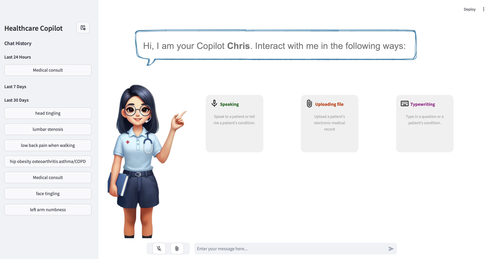 |
A Smart Multimodal Healthcare Copilot with Powerful LLM Reasoning Xuejiao Zhao*, Siyan Liu*, Su-Yin Yang, Chunyan Miao** (* Co-first author, ** Corresponding author) The 34th International Joint Conference on Artificial Intelligence, IJCAI 2025 [Paperlink] [Code] [Demo_en] [Demo_ch] [DoctorEval] |
| 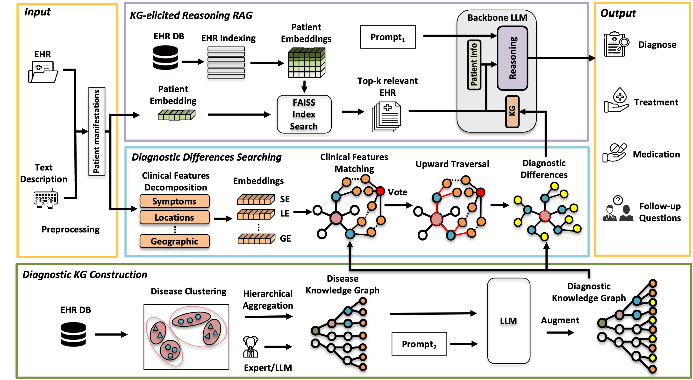 |
MedRAG: Enhancing Retrieval-augmented Generation with Knowledge Graph-Elicited Reasoning for Healthcare Copilot Xuejiao Zhao*, Siyan Liu*, Su-Yin Yang, Chunyan Miao** (* Co-first author, ** Corresponding author) The 2025 ACM Web Conference, WWW 2025 [Paperlink] [Code] [Poster] [RedNote] [AI Era] [Demo_en] [Demo_ch] |
| 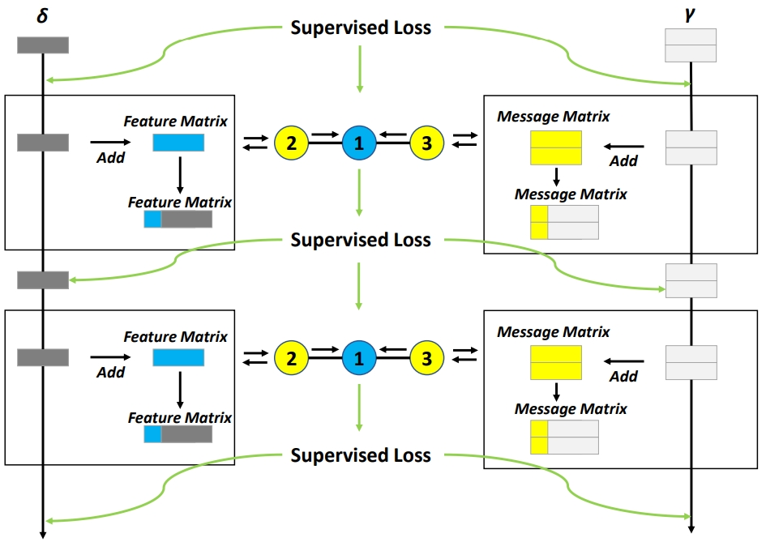 |
Unifying gradient regularization for Heterogeneous Graph Neural Networks Xiao Yang, Xuejiao Zhao*, Zhiqi Shen (* Corresponding author) Neural Networks [Paperlink] [Code] |
| 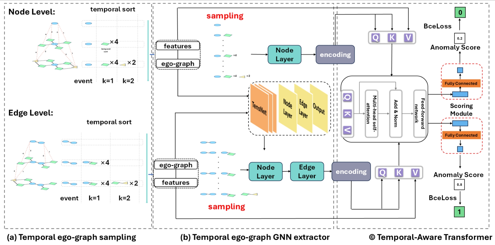 |
A Generalizable Anomaly Detection Method in Dynamic Graphs Xiao Yang, Xuejiao Zhao*, Zhiqi Shen* (* Corresponding author) The Thirty-Ninth AAAI Conference on Artificial Intelligence, AAAI 2025 [Paperlink] [Code] [Poster] [JiQiZhiXin] [AI TIME] |
| 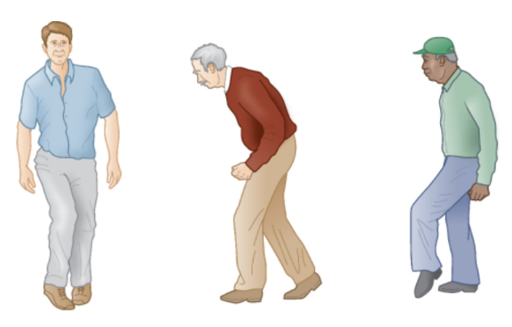 |
A Survey of Artificial Intelligence in Gait-Based Neurodegenerative Disease Diagnosis Haocong Rao, Minlin Zeng, Xuejiao Zhao, Chunyan Miao Neurocomputing 2025 [Paperlink] [Resource] |
| 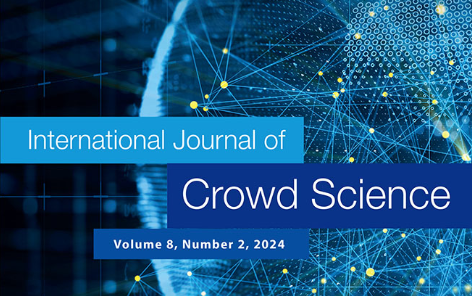 |
Editorial of Special Issue on AI for Health and Ageless Aging Xuejiao Zhao International Journal of Crowd Science, IJCS [Paperlink] |
| 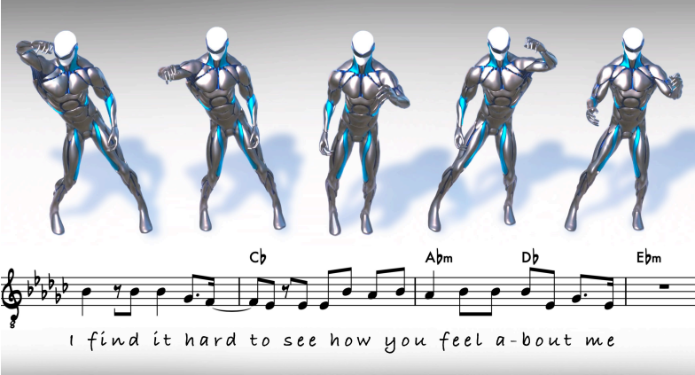 |
LM2D: Lyrics- and Music-Driven Dance Synthesis Wenjie Yin, Xuejiao Zhao*, Yi Yu, Hang Yin, Danica Kragic, Marten Bjorkman (* Co-first author) Arxiv [Paperlink] [VIDEO] |
| 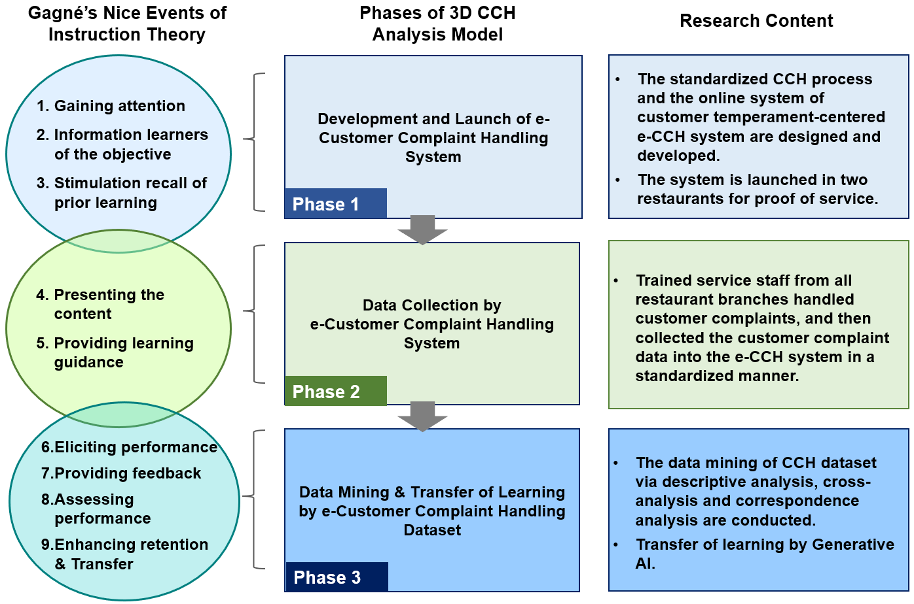 |
Data Collection, Data Mining and Transfer of Learning based on Customer Temperament-centered
Complaint Handling System and One-of-a-kind Complaint Handling Dataset Ching-Hung Lee, Xuejiao Zhao* (* Co-first author and Corresponding author) Advanced Engineering Informatics, AEI [Paperlink], [Dataset] |
| 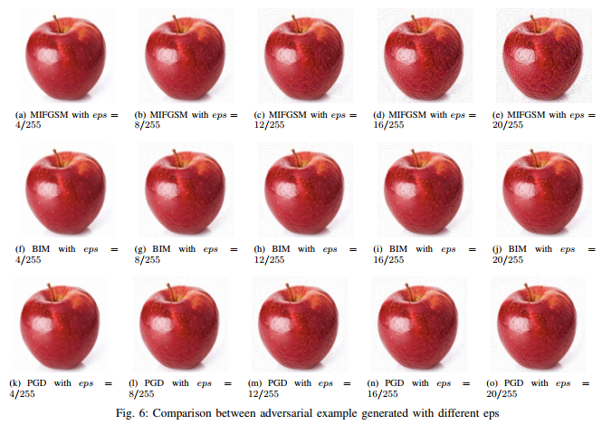 |
Cheating Your Apps: Black-box Adversarial Attacks on Deep Learning Apps Hongchen Cao, Shuai Li, Yuming Zhou, Ming Fan, Xuejiao Zhao, Yutian Tang Journal of Software: Evolution and Process, JSEP [Paperlink] |
| 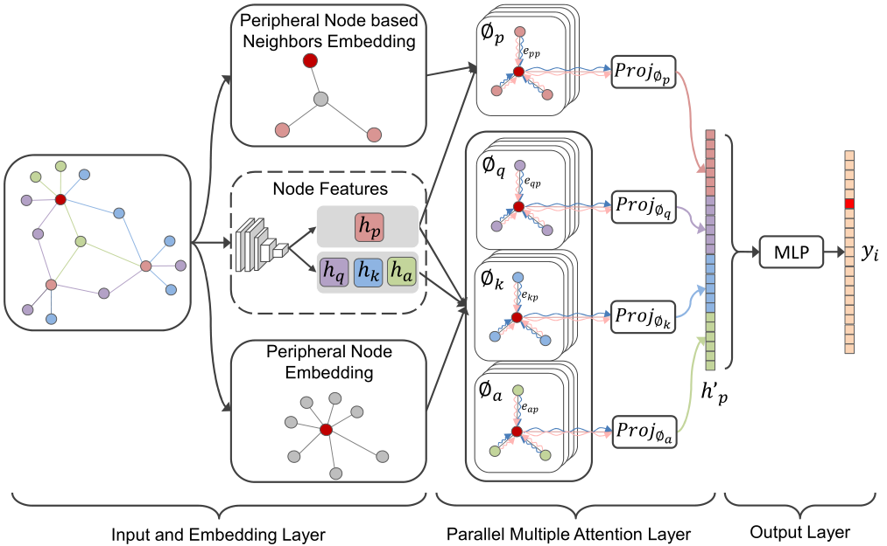 |
Heterogeneous Star Graph Attention Network for Product Attributes Prediction Xuejiao Zhao, Yong Liu, Yonghui Xu, Yonghua Yang, Xusheng Luo, Chunyan Miao Advanced Engineering Informatics, AEI [Paperlink] [Code] [Dataset] [Zhihu] |
| 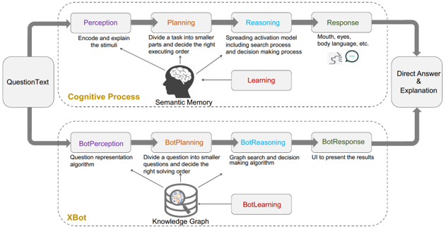 |
Brain-inspired Search Engine Assistant based on Knowledge Graph Xuejiao Zhao, Huanhuan Chen, Zhenchang Xing, Chunyan Miao IEEE Transactions on Neural Networks and Learning Systems, TNNLS [Paperlink] |
| 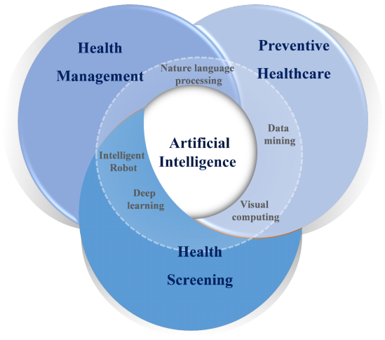 |
A Survey of Smart Healthcare for the Elderly based on User Requirements and Supply Accessibility Ching-Hung Lee, Zehao Zhang, Xuejiao Zhao* (* Corresponding author) The 5th International Conference on Crowd Science and Engineering, ICCSE 2021 [Paperlink] |
| 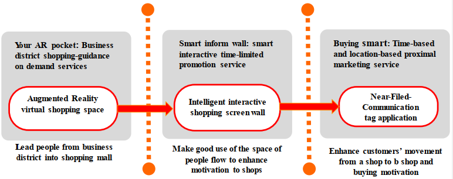 |
Service Quality Driven Approach for Innovative Retail Service System Design and Evaluation: A Case Study Ching-Hung Lee, Xuejiao Zhao, Yu-Chi LEE Journal of Computers & Industrial Engineering, CAIE [Paperlink] |
| 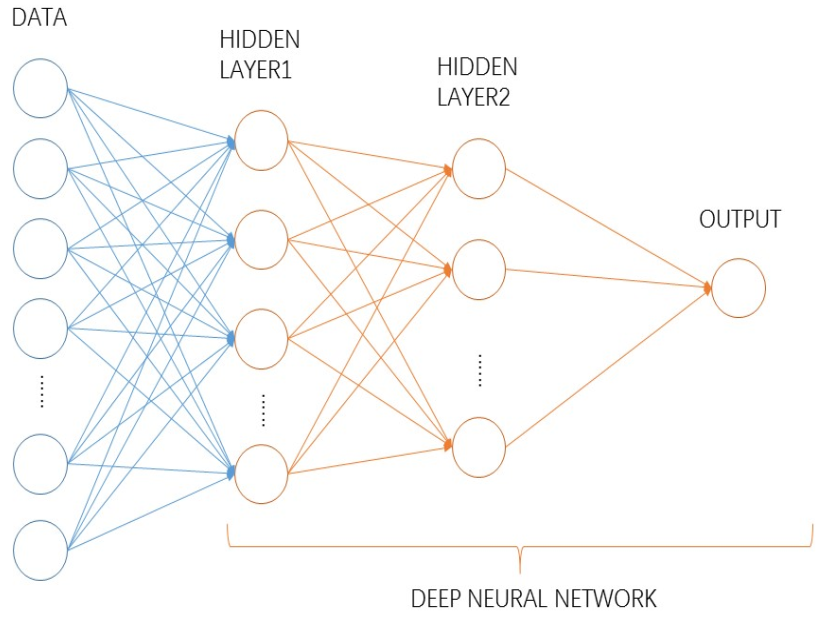 |
A comprehensive exploration to the machine learning techniques for diabetes identification Sidong Wei, Xuejiao Zhao, Chunyan Miao IEEE 4th World Forum on Internet of Things, WF-IoT 2018 [Paperlink] |
| 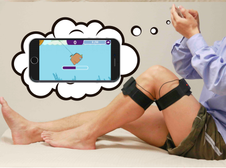 |
Gamified Rehabilitation for Pain Distraction in Total-Knee-Replacement Patients Xuejiao Zhao, Qiong Wu, X. Jessie Yang, Yang Qiu, Huiguo Zhang, Chunyan Miao CHI Conference on Human Factors in Computing Systems, CHI 2018 [Paperlink] |

|
A Smart Context-aware Program Assistant based on Dynamic Programming Event Modeling Xuejiao Zhao, Hongwei Li, Yutian Tang, Dongjing Gao, Lingfeng Bao, Ching-Hung Lee The 29th IEEE International Symposium on Software Reliability Engineering, ISSRE 2018 [Paperlink] |
| 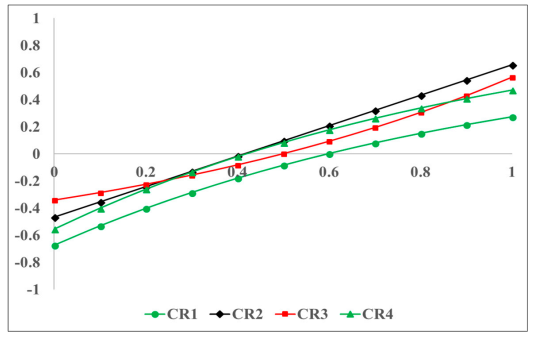 |
Developing a Quick Response Product Configuration System under Industry 4.0 Based on Customer Requirement Modelling and Optimization Method Ching-Hung Lee Chun-Hsien Chen, Chenyu Lin, Fan Li, Xuejiao Zhao Journal of Applied Sciences [Paperlink] |
| 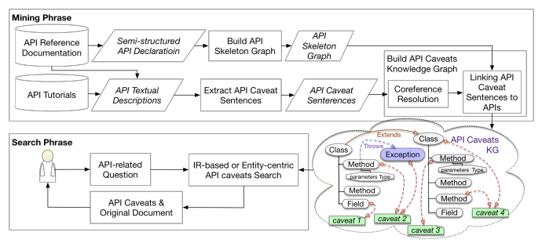 |
Improving API Caveats Accessibility by Mining API Caveats Knowledge Graph Hongwei Li, Sirui Li, Jiamou Sun, Zhenchang Xing, Xin Peng, Mingwei Liu, Xuejiao Zhao The 34th IEEE International Conference on Software Maintenance and Evolution, ICSME 2018 [Paperlink] |
| 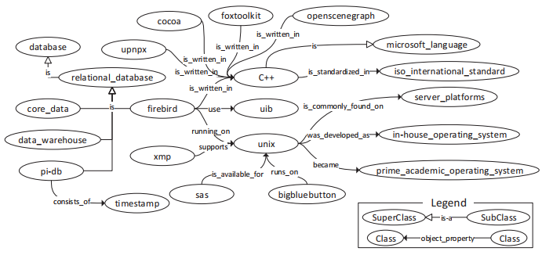 |
HDSKG: Harvesting domain-specific knowledge graph from the content of webpages Xuejiao Zhao, Zhenchang Xing, Muhammad Ashad Kabir, Naoya Sawada, Jing Li, Shang-Wei Lin IEEE 24th International Conference on Software Analysis, Evolution and Reengineering, SANER 2017 [Paperlink] |
Invited Talks and Showcases
Professional Services
Selected Fundings
Selected Honors & Scholarships
Supervised & Co-Supervised Students
- Haiming Tang, Nanyang Technological University (NTU), 2024.12-Present
- Huang Chen, Nanyang Technological University (NTU), 2024.09-Present
- Yiyang Zhao, Nanyang Technological University (NTU), 2024.08-Present
- Ziao Gao, Nanyang Technological University (NTU), 2024.08-Present
- Siyan Liu, National University of Singapore (NUS), 2024.05-Present
- Muxuan Li, Nanyang Technological University (NTU), 2024.04-Present
- Boyue Jiang, KTH Royal Institute of Technology, 2023.06-Present
- Di Yang, National University of Singapore (NUS), 2023.05-Present
- Xiao Yang, Nanyang Technological University (NTU), 2022.10-Present
- Abdul Hakiim Jalil, Nanyang Technological University (NTU), 2023.05-2023.10
- Yipeng Bao, Nanyang Technological University (NTU), 2022.09-2022.11
- Sidong Wei, Shanghai Jiao Tong University, 2017.10-2018.02
Leadership Experiences
| 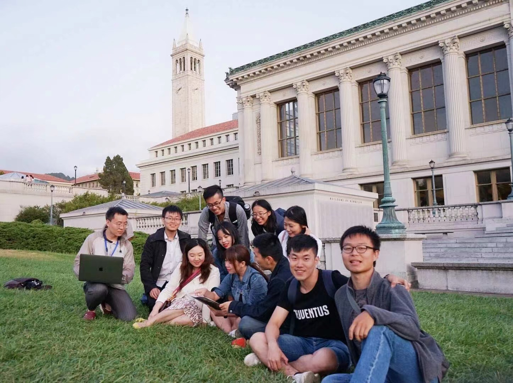 |
|
| 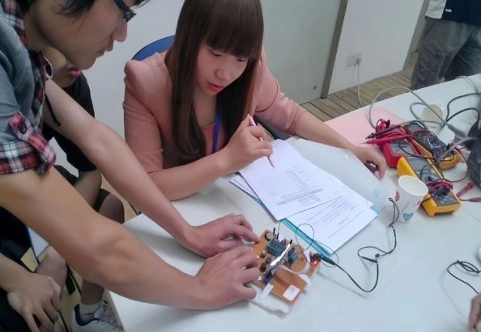 |
|
Talents
|
|
|
| 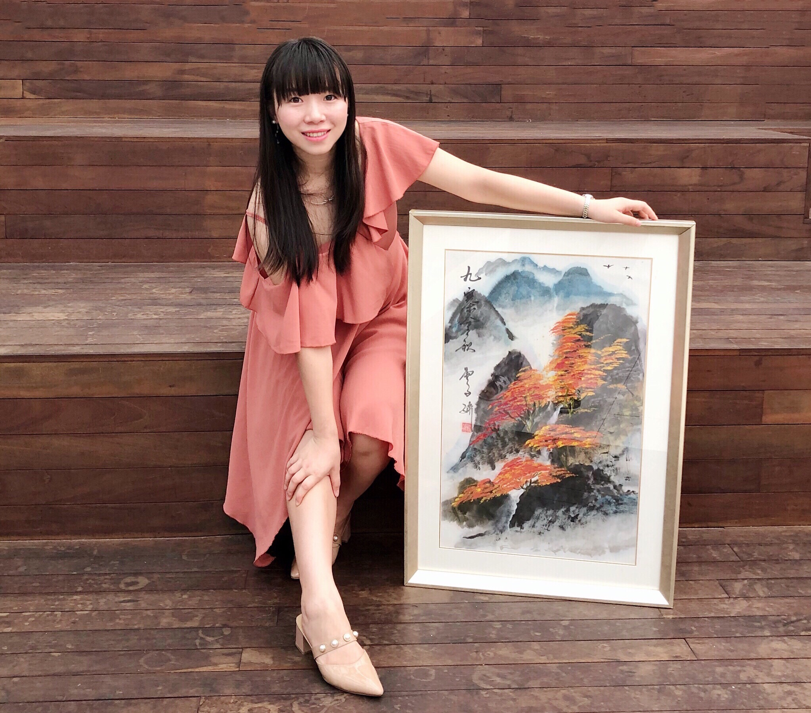 |
|